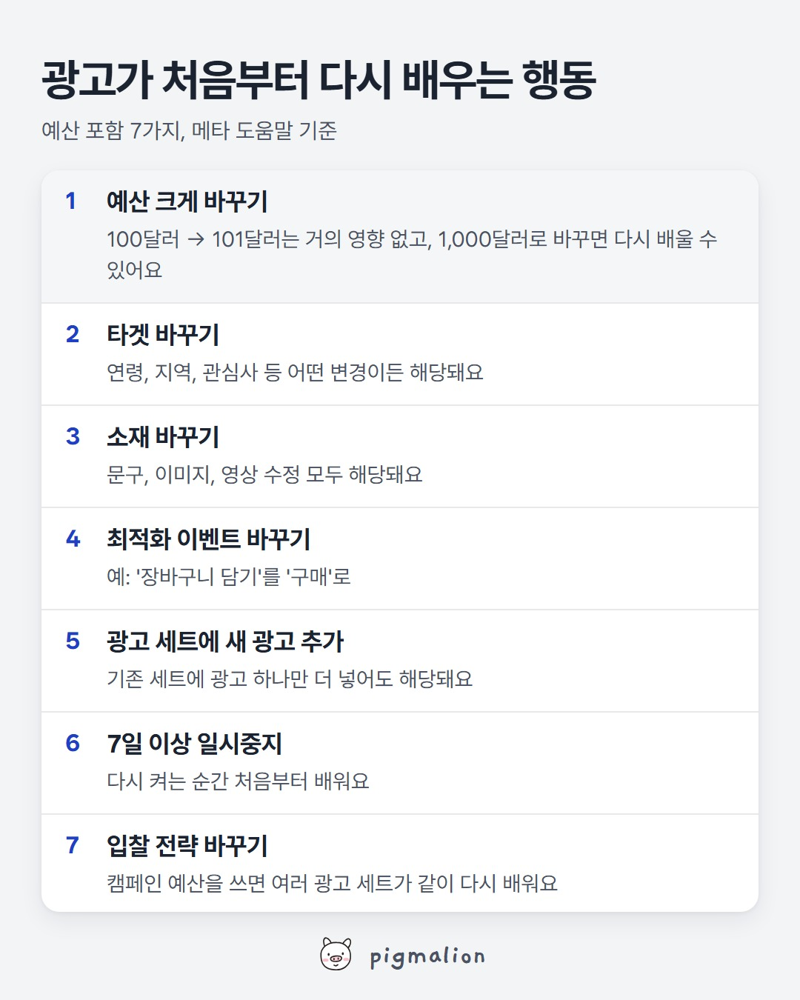

광고가 처음부터 다시 배우는 행동
저장해두고 성과가 떨어질 때 위에서부터 확인하세요

이미지를 길게 누르면 저장돼요
메타 공식 도움말로 보는 자세한 내용
'학습 단계'가 뭔가요
광고를 켜면 메타는 한동안 누구에게 보여줘야 결과가 잘 나오는지 찾아요. 이 기간에는 성과가 들쭉날쭉하고 결과당 비용이 더 높게 나올 수 있어요.
예산은 얼마나 바꾸면 다시 배우나요
메타는 정확한 퍼센트를 정해두지 않았어요. 변경 폭에 따라 다르다고 하고, 예시로 100달러 → 101달러는 다시 배울 가능성이 낮고 100달러 → 1,000달러는 다시 배울 수 있다고 들어요. 흔히 도는 '하루 20%' 같은 숫자는 공식 기준이 아니에요.
캠페인 예산(어드밴티지+ 캠페인 예산)을 쓰면
캠페인 예산을 바꾸면 그 안의 여러 광고 세트가 함께 다시 배울 수 있어요. 메타가 세트 사이에 예산을 나눠 쓰는 것만으로는 다시 배우지 않아요.
출처: 메타 비즈니스 도움말 '중요한 수정과 학습 단계'
AI 프롬프트
■ 어디에: 챗GPT, 클로드, 제미나이 중 아무거나 (무료 버전도 돼요)
■ 무엇을: 최근 2주 동안 광고에서 바꾼 것들 (날짜, 무엇을, 얼마나)
■ 어떻게:
- 아래 프롬프트를 "복사" 버튼으로 복사해 AI 새 대화에 붙여넣기
- 맨 끝 [ ] 칸에 바꾼 것들을 적기
- 엔터. 광고가 처음부터 다시 배우게 만든 변경과 다음에 바꿀 때 주의할 점이 나와요
너는 메타 광고를 운영하는 퍼포먼스 마케터야. 아래는 내가 최근 2주 동안 광고 세트에 한 변경 목록이야. 메타 도움말 기준으로, 이 중 학습 단계를 다시 시작시켰을 가능성이 있는 변경을 찾아줘. 기준 (메타 도움말 '중요한 수정'): - 항상 해당: 타겟 변경, 소재 변경, 최적화 이벤트 변경, 광고 세트에 새 광고 추가, 7일 이상 일시중지 후 다시 켜기, 입찰 전략 변경 - 변경 폭에 따라 해당: 예산 금액, 입찰 한도·결과당 비용 목표·ROAS 목표 금액, 광고 세트 지출 한도 (예: 예산 100달러 → 101달러는 해당 안 될 가능성이 크고, 100달러 → 1,000달러는 해당될 수 있음) 답은 이렇게 정리해줘: - 변경마다 '해당 / 폭에 따라 / 해당 안 됨' 표시와 이유 한 줄 - 같은 기간에 여러 변경이 몰려 있다면 묶어서 한 번에 할 수 있었던 방법 - 다음에 예산을 바꿀 때 지킬 것 3가지 (숫자 기준은 메타 공식 기준이 아니면 '경험 기준'이라고 표시) [최근 2주 변경 목록: 날짜 / 광고 세트 이름 / 무엇을 / 얼마나]